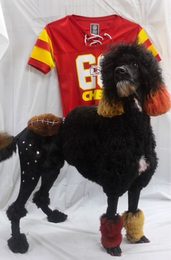
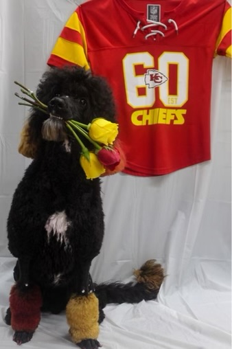

Bo
Clean profile
A good starter image for showing Bo's coat, tan ears, white chest patch, and longer beard.
Completed grooms
A starter gallery using Bo while this page waits for real completed-groom photos with client permission.
A good starter image for showing Bo's coat, tan ears, white chest patch, and longer beard.

A fun example of personality in a groom, saved for this starter gallery rather than the main brand image.

Useful as a placeholder until the gallery has before-and-after client examples.

A small starter card for Bo while the completed-grooms page grows over time.